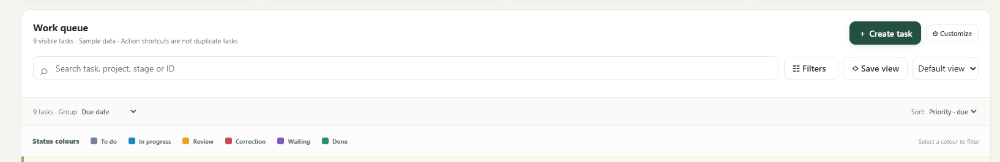
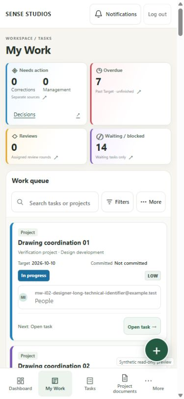
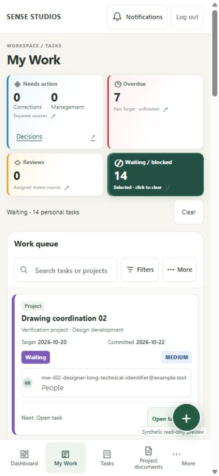
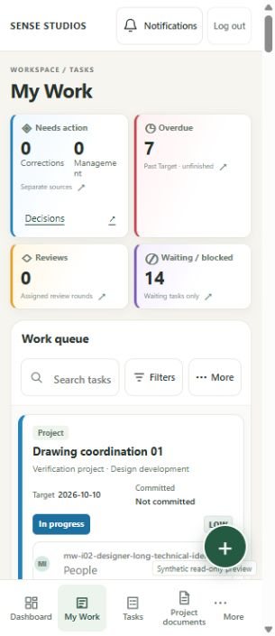
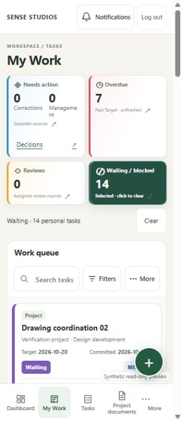

MW-I02 — current Work queue correction evidence
12 October 2026. MW-I02 remains IN PROGRESS. Needs action task eligibility is being designed; the separate-source card shown here is interim. This gallery does not claim final prototype acceptance.
Exact supplied reference
Owner-supplied Work queue crop. Approved source: D:/SCRAP/prototype (2).html, SHA256 F8C18088E04C72ACEE34C38BDB458BF84FC8CF9FC834667A75E3D5A3D95C59B8. No new full-screen prototype browser capture is substituted here.

Actual authenticated Owner — initial state
Existing local preview, genuine zero personal tasks without an employee identity and zero management obligations. Read-only page inspection; these are not the disposable-database four-role acceptance journey. Loading/error states are retained when present.
Actual application — Filters and removal
All canonical filter controls retained. Mobile sheets end above fixed navigation; Apply/Reset are 44px high and side by side. Separate settled applied-filter captures show individual removal and Clear all. Removal restored personal/active and returned focus to Filters.
Earlier actual loading-state chip snapshots are preserved: desktop / 320px.
Viewport labels refer to measured CSS viewport dimensions. Browser screenshot output may omit scroll gutters or scale its raster. A cropped resize-transition capture is retained as applied-filter-ready-desktop.png and excluded from comparison.
Synthetic populated and Waiting component previews
Synthetic read-only full-shell component previews with writes disabled. These are not authenticated Designer/Site Employee captures or proof of five genuine reassignment records. Counts are fixture inputs.

Initial — 390 × 844First task fully visible before navigation.

Waiting — 390 × 844First task fully visible before navigation.

Initial — 320 × 74073.36px scroll to reveal full task.

Waiting — 320 × 740108.70px scroll to reveal full task.
Mobile geometry — synthetic populated components
Full geometry evidence. The interim source card is taller than the demo. A final task metric and real four-role validation remain pending.
Frontend checks and preserved baseline
Node24.19.0/pnpm11.19.0. 100/100 affected tests PASS. Full frontend285PASS/20FAIL: exact20 baseline failure names, no new failures. Lint, contracts/web/API typechecks and production web build PASS.
No PostgreSQL start/setup, backend/schema/permission change, production write or authenticated acceptance harness run. Functional checks pass within their stated scope; Prototype Visual Fidelity remains FAIL/pending. Stop for Owner design review.